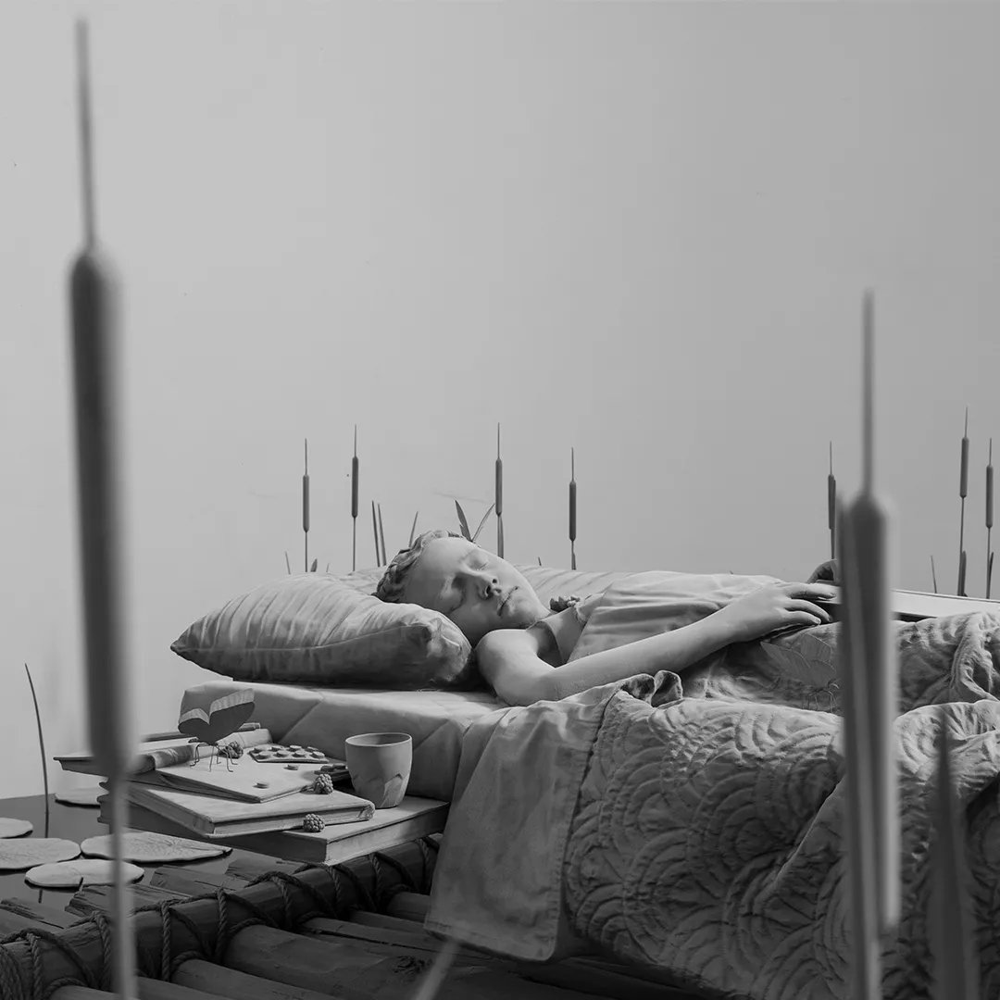

<!doctype html><html lang="tr"><meta charset="utf-8"><meta name="viewport" content="width=device-width,initial-scale=1"><title>Past sergİler | PİLEVNELİ</title><style>body{margin:0;background:#f6f5f1;color:#1d2327;font:16px/1.6 system-ui,sans-serif}main{max-width:1100px;margin:auto;padding:36px 28px}a{color:#244e8b}h1{font-size:32px;line-height:1.25}img{max-width:100%;height:auto}nav,.notice{padding:14px 20px;background:white;border:1px solid #ddd;border-radius:8px;margin:0 0 24px}nav{display:flex;gap:24px;flex-wrap:wrap}.records_list ul{list-style:none;padding:0;display:grid;grid-template-columns:repeat(auto-fit,minmax(260px,1fr));gap:24px}.records_list li{background:white;padding:16px}.image img{max-height:600px;object-fit:contain}.clear{clear:both}button,input,select{font:inherit;padding:9px 14px;border:1px solid #bbb;border-radius:6px}button{cursor:pointer;background:white}small{color:#667}table{width:100%;border-collapse:collapse}td,th{text-align:left;padding:10px;border-bottom:1px solid #ddd}.tag{font-size:12px;border-radius:5px;padding:3px 8px;background:#e5ebe5}pre{white-space:pre-wrap}</style><main><nav><a href="../arsiv.html">← Arşiv dizini</a><a href="https://web.archive.org/web/20251205080336/https://www.pilevneli.com/tr/exhibitions/past/2020/">Wayback kopyası</a><a href="../texts/a6e4962adfeef249.txt">Düz metin</a></nav><h1>Past sergİler | PİLEVNELİ</h1><div class="notice">/tr/exhibitions/past/2020/ · Kayıt tarihi: 2025-12-05<br><small>Arşivden kurtarılan içerik. Sayfaların kayıt tarihleri farklıdır. İşlevler ve özgün tasarım birebir korunmamış olabilir.</small></div><div class="exhibition-list-outer-container clearwithin" id="content">
<div class="prose clearwithin full_width" id="content_module">
</div>
<div class="standard-entry-list" id="exhibitions-grid-container">
<div class="subsection-exhibitions-grid" data-ajax-list-type="None" id="exhibitions-grid-past">
<div aria-level="2" class="subheading" role="heading"><span>GEÇMİŞ</span></div>
<div class="records_list image_list grid_dynamic_layout_exhibitions collapse_single_column gd_no_of_columns_3 clearwithin" data-pagestats-id="page_stats_0">
<ul class="clearwithin">
<li data-height="1080" data-width="1080">
<a href="https://web.archive.org/web/20251205080336/https://www.pilevneli.com/tr/exhibitions/13-ziya-tacir-seeking-for-light-pilevneli-dolapdere/works/">
<span class="image"><span>

</span></span>
<div class="content">
<h2>ZİYA TACİR, IŞIĞI ARAMAK</h2>
<span class="subtitle">PİLEVNELİ | DOLAPDERE</span>
<span class="date">3 December 2020 - 9 January 2021</span>
<span class="link"><span class="read_more">DAHA FAZLA</span></span>
</div>
</a>
</li>
<li data-height="1080" data-width="1080">
<a href="https://web.archive.org/web/20251205080336/https://www.pilevneli.com/tr/exhibitions/12-hans-op-de-beeck-drifting-pilevneli-dolapdere/works/">
<span class="image"><span>

</span></span>
<div class="content">
<h2>HANS OP DE BEECK, SÜZÜLME</h2>
<span class="subtitle">PİLEVNELİ | DOLAPDERE</span>
<span class="date">8 October - 22 November 2020</span>
<span class="link"><span class="read_more">DAHA FAZLA</span></span>
</div>
</a>
</li>
<li class="last" data-height="1080" data-width="1080">
<a href="ca44f04bac3537f3.html">
<span class="image"><span>

</span></span>
<div class="content">
<h2>TAYFUN SERTTAŞ, SAPTANAMAYAN</h2>
<span class="subtitle">PİLEVNELİ | DOLAPDERE</span>
<span class="date">8 October - 22 November 2020</span>
<span class="link"><span class="read_more">DAHA FAZLA</span></span>
</div>
</a>
</li>
</ul>
</div>
</div>
</div>
</div></main></html>